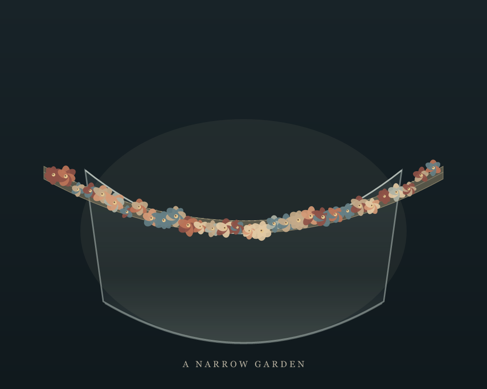
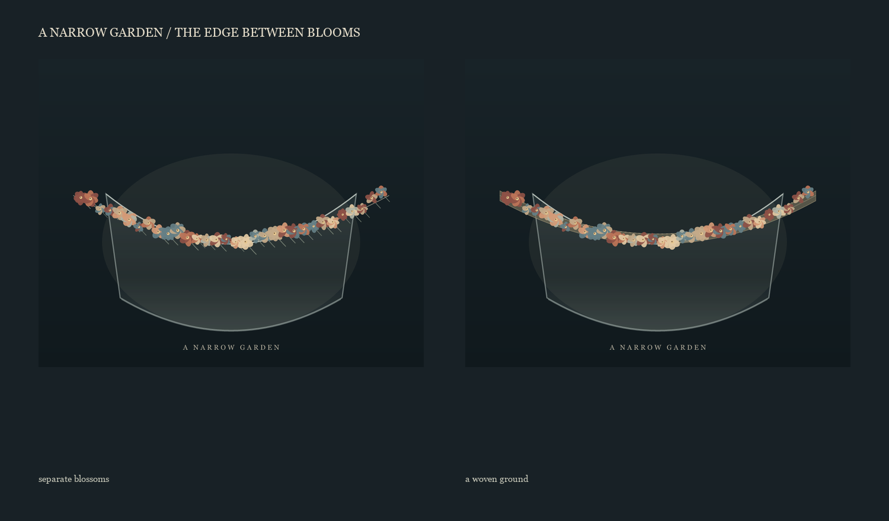
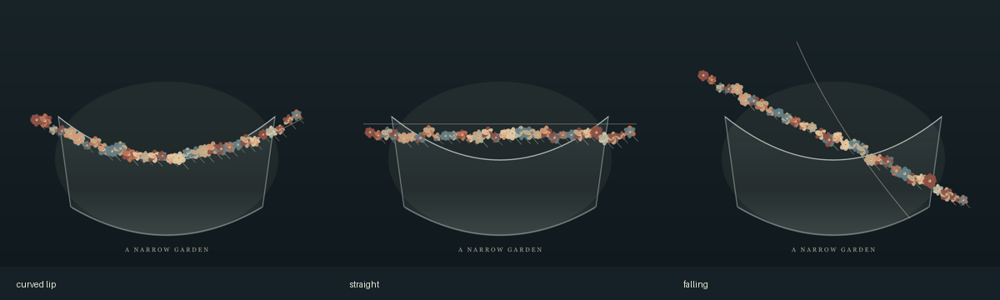

A Narrow Garden
The Met records this small length of silk trim as a French or British gimp, made around 1750: 20.3 cm long and only 2.5 cm wide. Its close flowers make a lively edge. I tried the band straight, falling across the vessel, and following its curved lip.

At small scale, the first pass broke into separate blossoms. I removed its dangling stems and laid a quiet woven ground beneath the flowers. The band now holds together between blooms while the vessel remains visible.

The straight band floats free of the vessel; the diagonal cuts across it. Along the lip, the trim can gather without taking over the whole form. These are drawn inventions answering the photograph, not a reconstruction of the surviving silk or glass.
